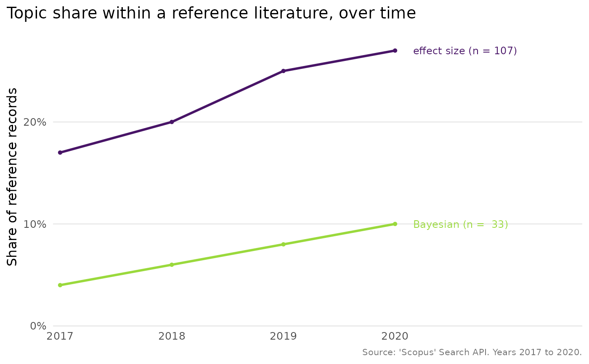
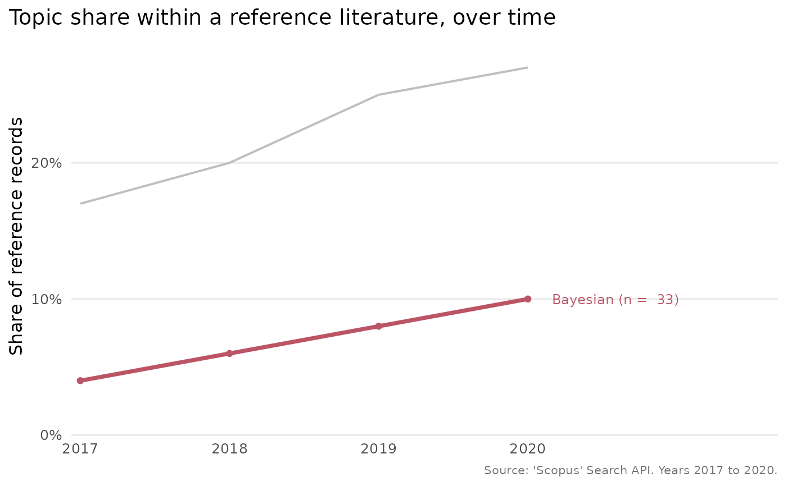

Draws a line chart of each comparison topic's share of the reference
literature over time, from the output of scopus_compare_topics(). The chart
uses integer year breaks, a colour-blind-safe palette and, for a handful of
topics, labels the lines directly so the reader need not consult a legend.
Usage
plot_scopus_comparison(x, pub_count_in_legend = TRUE, highlight = NULL, ...)
# S3 method for class 'scopus_comparison'
autoplot(object, ...)Arguments
- x
A
scopus_comparisonobject fromscopus_compare_topics().- pub_count_in_legend
Logical. When
TRUE(the default), each topic's label carries its total record count, for exampleeffect size (n = 1,204).- highlight
Optional character scalar naming one comparison topic to draw the eye to. The named topic is drawn in an accent colour and the others in grey, which is useful when one topic is the focus of a figure.
- ...
Currently unused, present for S3 consistency.
- object
A
scopus_comparisonobject (for theautoplot()method).
Value
A ggplot2::ggplot object. Printing it draws the plot.
Details
This needs the suggested package ggplot2 and raises an informative error when it is absent. The chart shows the comparison topics alone, since the reference is the 100% denominator against which they are measured. A year for which the reference has no records carries no defined share and is omitted, which is noted in the caption.
Examples
cmp <- tibble::tibble(
query = "q", query_type = "comparison",
abridged_query = rep(c("effect size", "Bayesian"), each = 4),
year = rep(2017:2020, 2), n = c(20, 24, 30, 33, 5, 7, 9, 12),
reference_n = rep(120, 8),
comparison_percentage = c(17, 20, 25, 27, 4, 6, 8, 10),
average_comparison_percentage = rep(c(22, 7), each = 4)
)
class(cmp) <- c("scopus_comparison", class(cmp))
plot_scopus_comparison(cmp)

plot_scopus_comparison(cmp, highlight = "Bayesian")
